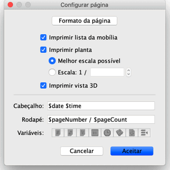
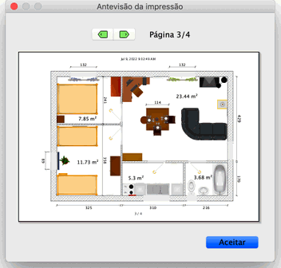

| Imprimir uma casa | |||
Para imprimir uma casa, escolha Ficheiro > Imprimir.... Por predefinição, o Sweet Home 3D imprime a lista de mobília, a planta e a vista 3D actual de uma casa, usando o
tamanho de papel, margens e orientação predefinidos.  Na janela de configuração da página, pode alterar o tamanho e a orientação do papel
clicando em Formato da página. Pode também escolher se a lista de mobília, a planta e a vista 3D de uma casa devem
ser imprimidas ou não. Se não quiser usar o ajuste automático da escala ao tamanho do papel, pode escolher outra escala no
campo Escala.
Para evitar ter de escrever o nome exato das variáveis, use os botões Variáveis mostrados abaixo dos campos Cabeçalho e Rodapé . Como o sinal "$" é reservado para variáveis, deve usar o código "$$" para imprimir um "$". Antes de imprimir a sua casa, pode pré-visualizá-la no ecrã, escolhendo Ficheiro > Pré-visualizar....  Na janela de pré-visualização, pode ver como uma casa vai ser imprimida, página por página. Para mudar a página pré-visualizada, clique nas setas no topo da janela ou use as setas do teclado. |
|